A fellow Persona-user and the former star of the track team.
He resents selfish adults.
CHARIOT ARCANA SKILLS
CHARIOT ARCANA PERSONAS
CHARIOT ARCANA SKILLS
| Rank | Name | Effect |
|---|---|---|
| 1 | - | - |
| 2 | Punk Talk | If negotiation with an upbeat Shadow fails, you can try again. |
| 3 | Follow Up | Chance to perform a follow-up attack if Joker’s attack does not down the enemy. |
| 4 | Stealth Dash | Makes Joker less likely to be found in the Metaverse while dashing. |
| 5 | - | - |
| 6 | Harisen Recovery | Chance to cure status ailments inflicted upon party members. |
| 7 | Insta-kill | When encountering a weak Shadow, you may destroy it immediately. |
| 8 | Endure | Chance to withstand an otherwise fatal attack with 1 HP remaining. |
| 9 | Protect | Chance to shield Joker from an otherwise fatal attack. |
| 10 | Second Awakening |
Ryuji’s Persona, Captain Kidd, transforms into Seiten Taisei |
| 11 (P5R) | Third Awakening |
Seiten Taisei transforms into William |
CHARIOT ARCANA PERSONAS
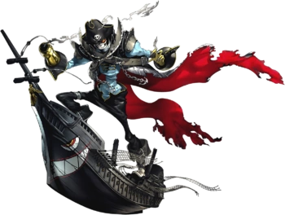 Captain Kidd
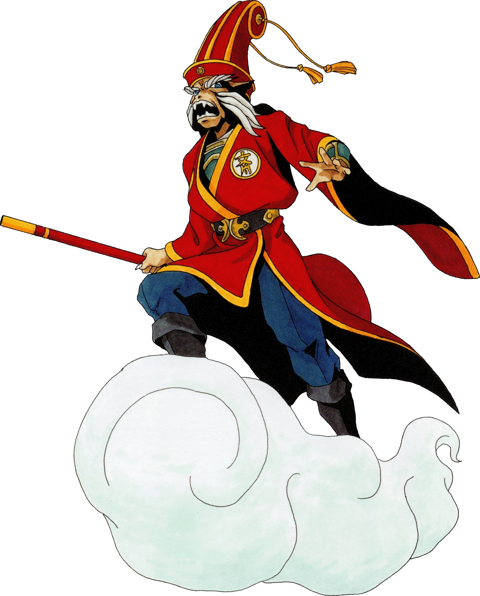 Seiten Taisei
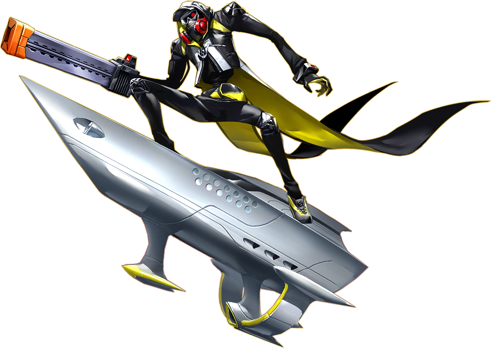 William
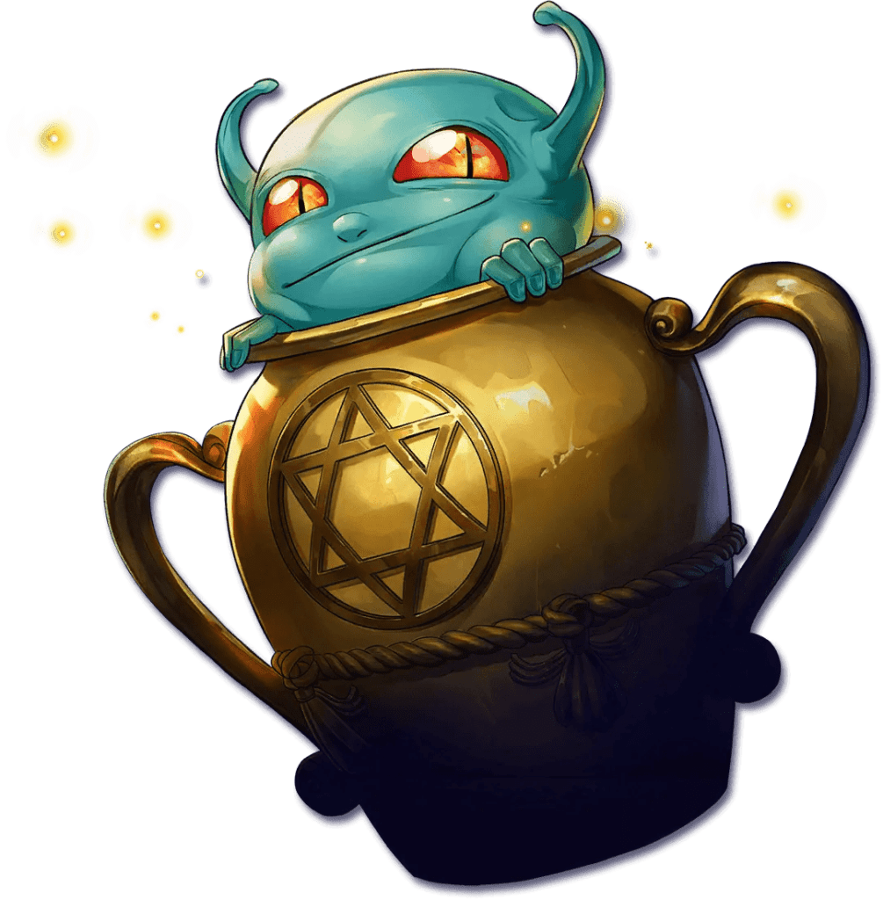 Agathion
Slime
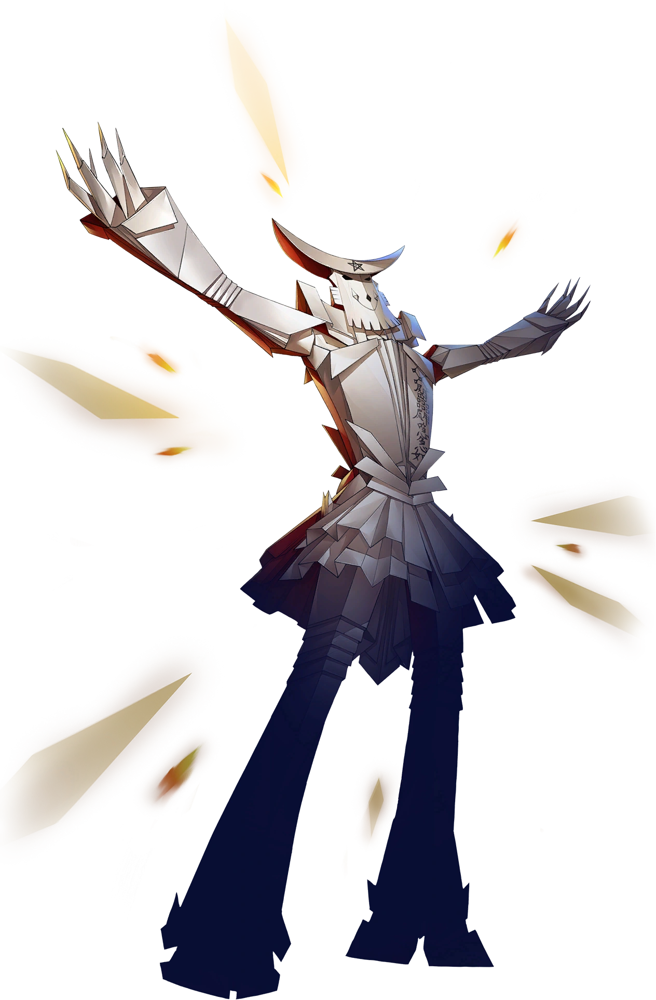 Shiki Ouji
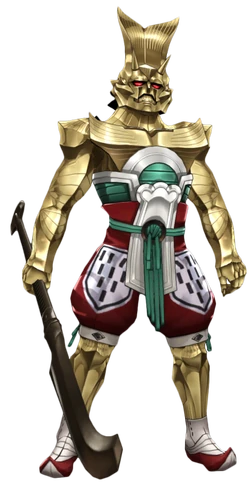 Kin-Ki
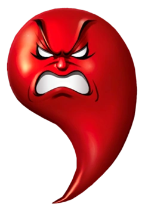 Ara Mitama
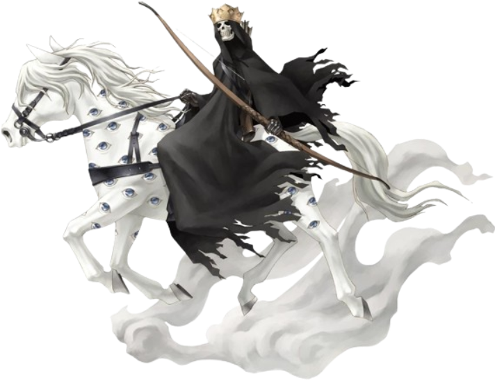 White Rider
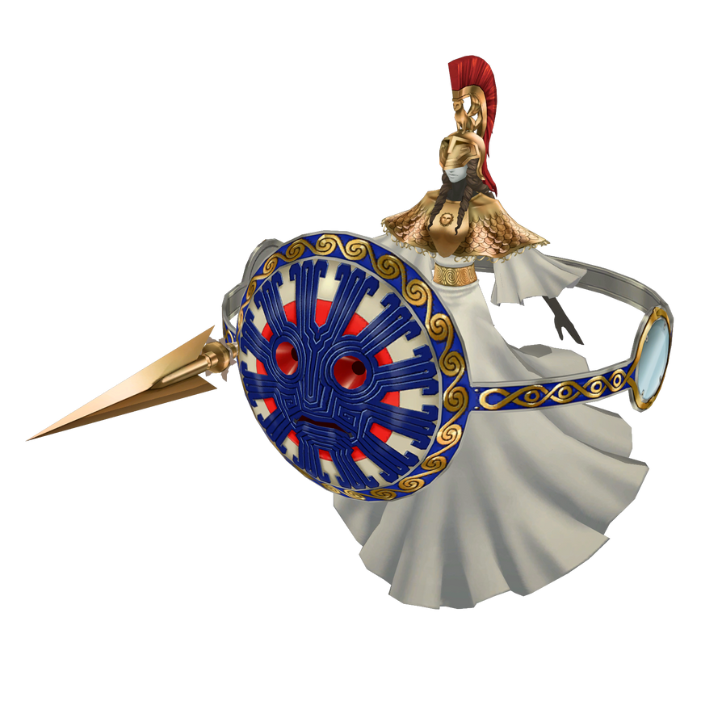 Athena
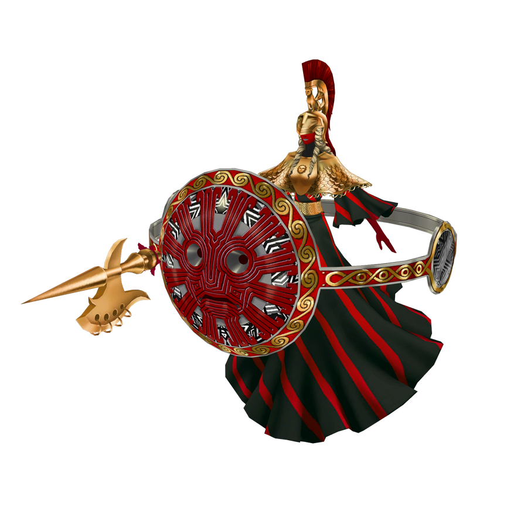 Athena Picaro
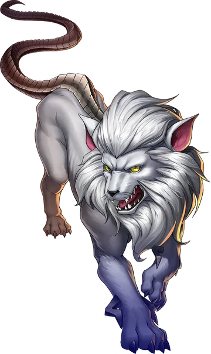 Cerberus
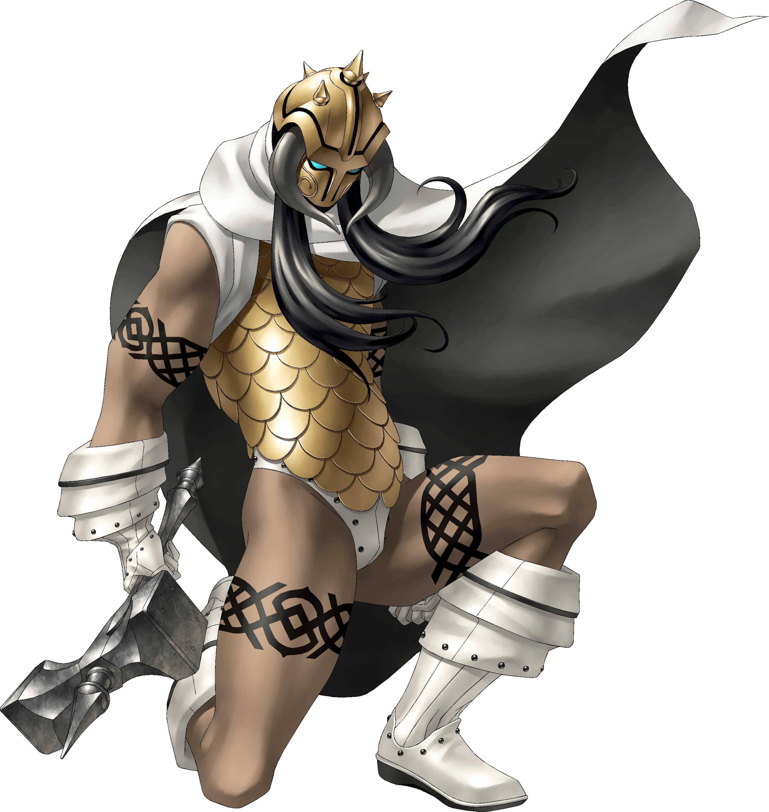 Thor
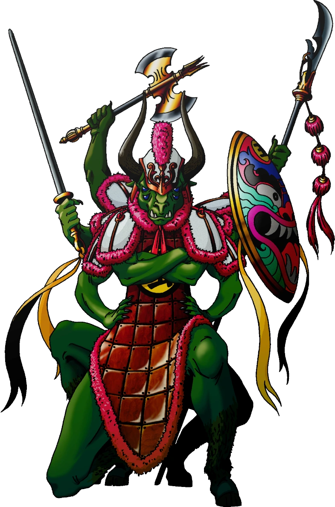 Chi You